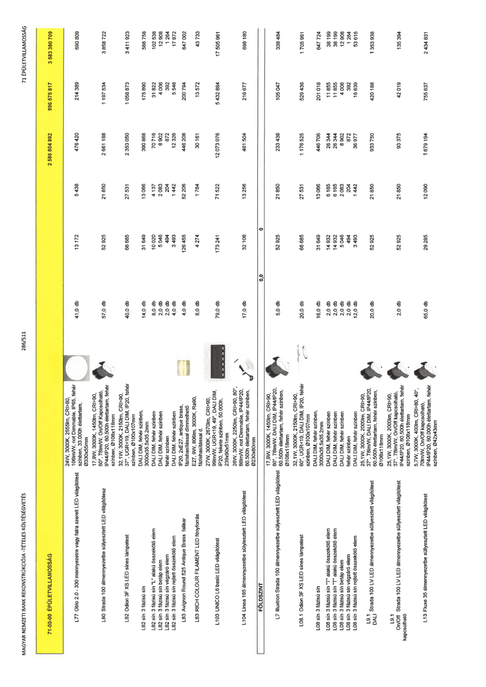

| Tétel | Menny. | Egys. | Anyag e.ár (net HUF) | Díj e.ár (net HUF) | Anyag összesen (net HUF) | Díj összesen (net HUF) | Anyag+Díj összesen (net HUF) |
|---|---|---|---|---|---|---|---|
| 71-00-00 ÉPÜLETVILLAMOSSÁG | NaN | NaN | 0 | 0 | 2 586 804 892 | 996 575 817 | 3 583 380 709 |
| 24W, 3000K, 2555lm, CRI>80, 106lm/W, not Dimmable, IP65, fehér színben, 33.000h élettartam, Ø330x55mm | 0 | 0 | 0 | 0 | 0 | 0 | 0 |
| L77 Oblo 2.0 - 330 mennyezetre vagy falra szerelt LED világítótest | 41,0 | db | 13 172 | 5 438 | 476 420 | 214 389 | 690 809 |
| 17,9W, 3000K, 1450lm, CRI>90, 60°, 78lm/W, On/Off Kapcsolható, IP44/IP20, 60.500h élettartam, fehér színben, Ø108x118mm | 0 | 0 | 0 | 0 | 0 | 0 | 0 |
| L80 Strada 100 álmennyezetbe süllyesztett LED világítótest | 57,0 | db | 52 925 | 21 850 | 2 661 188 | 1 197 534 | 3 858 722 |
| 32,1W, 3000K, 2150lm, CRI>90, 37°, UGR<19, DALI DIM, IP20, fehér színben, Ø100x107mm | 0 | 0 | 0 | 0 | 0 | 0 | 0 |
| L82 Odion 3F XS LED sínes lámpatest | 40,0 | db | 66 685 | 27 531 | 2 353 050 | 1 058 873 | 3 411 923 |
| DALI DIM, fehér színben, 3000x35,5x35,2mm | 0 | 0 | 0 | 0 | 0 | 0 | 0 |
| L82 sín 3 fázisú sín | 14,0 | db | 31 649 | 13 066 | 390 868 | 175 890 | 566 758 |
| DALI DIM, fehér színben | 0 | 0 | 0 | 0 | 0 | 0 | 0 |
| L82 sín 3 fázisú sín "L" alakú összekötő elem | 8,0 | db | 10 020 | 4 137 | 70 716 | 31 822 | 102 538 |
| DALI DIM, fehér színben | 0 | 0 | 0 | 0 | 0 | 0 | 0 |
| L82 sín 3 fázisú sín betáp elem | 2,0 | db | 5 046 | 2 083 | 8 902 | 4 006 | 12 908 |
| fehér színben | 0 | 0 | 0 | 0 | 0 | 0 | 0 |
| L82 sín 3 fázisú sín végzáró elem | 2,0 | db | 494 | 204 | 872 | 392 | 1 264 |
| DALI DIM, fehér színben | 0 | 0 | 0 | 0 | 0 | 0 | 0 |
| L82 sín 3 fázisú sín rejtett összekötő elem | 4,0 | db | 3 493 | 1 442 | 12 326 | 5 546 | 17 872 |
| IP20, 2xE27, antique brass, fázishasítással dimmelhető | 0 | 0 | 0 | 0 | 0 | 0 | 0 |
| L83 Avignon Round 525 Antique Brass falikar | 4,0 | db | 126 455 | 52 206 | 446 208 | 200 794 | 647 002 |
| E27, 9W, 806lm, 3000K, Ra90, fázishasítással d. | 0 | 0 | 0 | 0 | 0 | 0 | 0 |
| L83 RICH COLOUR FILAMENT LED fényforrás | 8,0 | db | 4 274 | 1 764 | 30 161 | 13 572 | 43 733 |
| 27W, 3000K, 2670lm, CRI>90, 99lm/W, UGR<19, 49°, DALI DIM, IP20, fekete színben, 50.000h, 239x90x51mm | 0 | 0 | 0 | 0 | 0 | 0 | 0 |
| L103 UNICO L6 basic LED világítótest | 79,0 | db | 173 241 | 71 522 | 12 073 076 | 5 432 884 | 17 505 961 |
| 26W, 3000K, 2250lm, CRI>90, 80°, 86lm/W, not Dimmable, IP44/IP20, 60.500h élettartam, fehér színben, Ø230x80mm | 0 | 0 | 0 | 0 | 0 | 0 | 0 |
| L104 Linea 185 álmennyezetbe süllyesztett LED világítótest | 17,0 | db | 32 108 | 13 256 | 481 504 | 216 677 | 698 180 |
| FÖLDSZINT | NaN | NaN | 0 | 0 | 0 | 0 | 0 |
| 17,9W, 3000K, 1450lm, CRI>90, 60°, 78lm/W, DALI DIM, IP44/IP20, 60.500h élettartam, fehér színben, Ø108x118mm | 0 | 0 | 0 | 0 | 0 | 0 | 0 |
| L7 Illuxtron Strada 100 álmennyezetbe süllyesztett LED világítótest | 5,0 | db | 52 925 | 21 850 | 233 438 | 105 047 | 338 484 |
| 32,1W, 3000K, 2150lm, CRI>90, 60°, UGR<19, DALI DIM, IP20, fehér színben, Ø100x107mm | 0 | 0 | 0 | 0 | 0 | 0 | 0 |
| L08.1 Odion 3F XS LED sínes lámpatest | 20,0 | db | 66 685 | 27 531 | 1 176 525 | 529 436 | 1 705 961 |
| DALI DIM, fehér színben, 3000x35,5x35,2mm | 0 | 0 | 0 | 0 | 0 | 0 | 0 |
| L08 sín 3 fázisú sín | 16,0 | db | 31 649 | 13 066 | 446 706 | 201 018 | 647 724 |
| DALI DIM, fehér színben | 0 | 0 | 0 | 0 | 0 | 0 | 0 |
| L08 sín 3 fázisú sín "L" alakú összekötő elem | 2,0 | db | 14 932 | 6 165 | 26 344 | 11 855 | 38 199 |
| DALI DIM, fehér színben | 0 | 0 | 0 | 0 | 0 | 0 | 0 |
| L08 sín 3 fázisú sín "T" alakú összekötő elem | 2,0 | db | 14 932 | 6 165 | 26 344 | 11 855 | 38 199 |
| DALI DIM, fehér színben | 0 | 0 | 0 | 0 | 0 | 0 | 0 |
| L08 sín 3 fázisú sín betáp elem | 2,0 | db | 5 046 | 2 083 | 8 902 | 4 006 | 12 908 |
| fehér színben | 0 | 0 | 0 | 0 | 0 | 0 | 0 |
| L08 sín 3 fázisú sín végzáró elem | 2,0 | db | 494 | 204 | 872 | 392 | 1 264 |
| DALI DIM, fehér színben | 0 | 0 | 0 | 0 | 0 | 0 | 0 |
| L08 sín 3 fázisú sín rejtett összekötő elem | 12,0 | db | 3 493 | 1 442 | 36 977 | 16 639 | 53 616 |
| 25,1W, 3000K, 2000lm, CRI>90, 37°, 78lm/W, DALI DIM, IP44/IP20, 60.500h élettartam, fehér színben, Ø108x118mm | 0 | 0 | 0 | 0 | 0 | 0 | 0 |
| L9.1 DALI Strada 100 LV LED álmennyezetbe süllyesztett világítótest | 20,0 | db | 52 925 | 21 850 | 933 750 | 420 188 | 1 353 938 |
| 25,1W, 3000K, 2000lm, CRI>90, 37°, 78lm/W, On/Off kapcsolható, IP44/IP20, 60.500h élettartam, fehér színben, Ø108x118mm | 0 | 0 | 0 | 0 | 0 | 0 | 0 |
| L9.1 On/Off kapcsolható Strada 100 LV LED álmennyezetbe süllyesztett világítótest | 2,0 | db | 52 925 | 21 850 | 93 375 | 42 019 | 135 394 |
| 5,7W, 3000K, 400lm, CRI>80, 40°, 70lm/W, On/Off kapcsolható, IP44/IP20, 60.000h élettartam, fehér színben, Ø42x43mm | 0 | 0 | 0 | 0 | 0 | 0 | 0 |
| L13 Fluxe 35 álmennyezetbe süllyesztett LED világítótest | 65,0 | db | 29 285 | 12 090 | 1 679 194 | 755 637 | 2 434 831 |
